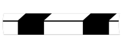
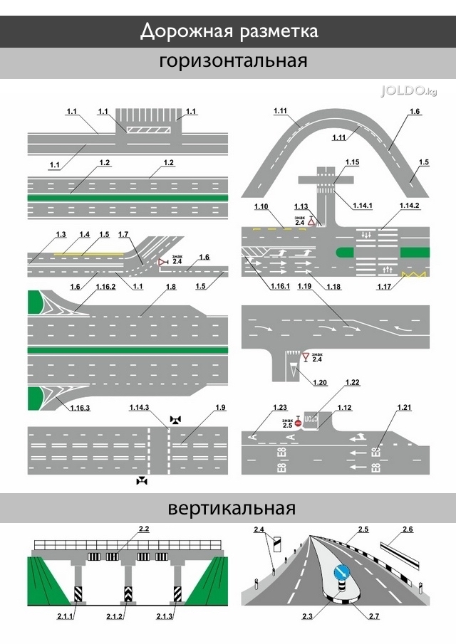
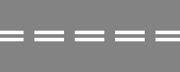
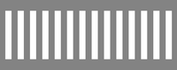
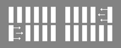
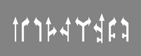
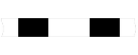

(по ГОСТ 32945-2014 и КМС ГОСТ Р 52289-2004) от 05 февраля 2020 года No 62


1. Горизонтальная разметка
Линии, надписи, стрелы и другие обозначения горизонтальной разметки наносят на усовершенствованное дорожное покрытие, кроме случаев, оговоренных ГОСТ Р 52289-2004.
В населенных пунктах горизонтальную разметку применяют на магистральных дорогах и улицах, дорогах и улицах местного значения, а в сельских поселениях - на дорогах и улицах, по которым осуществляется движение маршрутных транспортных средств.
Разметку 1.1 применяют в следующих случаях:
для разделения потоков транспортных средств, движущихся в противоположных направлениях (осевая линия),
на дорогах, имеющих две или три полосы для движения в обоих направлениях:
- на участках дорог, где зоны с видимостью встречного автомобиля менее допустимой перекрывают друг друга;
- на всем протяжении кривых в плане, радиус которых не превышает 50 м, а также на примыкающих к ним участках с переменным радиусом. На дорогах, имеющих две полосы, разметку наносят так, чтобы было выдержано отношение ширины внутренней полосы к внешней.
Линии 1.1, 1.2 и 1.3 пересекать запрещается
Разметку 1.2 применяют для обозначения:
- края проезжей части (краевая линия);
- левой границы полосы для движения велосипедов, выделенной по правому краю проезжей части.
Линии 1.1, 1.2 и 1.3 пересекать запрещается.
Линию 1.2 допускается пересекать для остановки транспортного средства на обочине и при выезде с нее в местах, где разрешена остановка или стоянка.
Разметку 1.3 применяют для разделения транспортных потоков противоположных направлений (осевая линия) на участках дорог, имеющих четыре и более полос движения в обоих направлениях, включая переходно-скоростные и дополнительные полосы.
Линии 1.1, 1.2 и 1.3 пересекать запрещается.
Разметку 1.4 применяют на участках дорог, где запрещена остановка транспортных средств.
Разметку 1.5 применяют для:
- разделения транспортных потоков противоположных направлений (осевая линия) на дорогах, имеющих две полосы движения в обоих направлениях, на участках дорог, где зоны с видимостью встречного автомобиля менее допустимой не перекрывают друг друга;
- обозначения границ полос движения при их числе две или более для одного направления.
Разметку 1.6 (линия приближения) применяют для предупреждения о приближении к разметке 1.1 или 1.11, разделяющей потоки транспортных средств, движущихся в противоположных или попутных направлениях.
Разметку 1.7 применяют для обозначения границ полос движения в пределах перекрестка в случаях, когда необходимо показать траекторию движения транспортных средств или обозначить границы полосы движения.
Разметку 1.8 применяют для обозначения границы между полосой разгона или торможения и основной полосой движения.

Разметку 1.9 (реверсивная линия) применяют для:
- обозначения границ полос, направление движения по которым меняется на противоположное;
- разделения потоков транспортных средств противоположных направлений (при выключенных реверсивных светофорах) на участках дорог, где используется реверсивное регулирование.
Разметку 1.10 применяют на участках дорог, где необходимо запретить стоянку транспортных средств.
Разметку 1.11 (барьерная линия) применяют для разделения потоков транспортных средств противоположных или попутных направлений при необходимости запрещения перестроения транспортных средств.
Разметку 1.12 (стоп-линия) применяют перед перекрестком при наличии знака 2.5 "Движение без остановки запрещено", в местах, где движение регулируется светофором, и перед железнодорожными переездами
Разметку 1.13 применяют для обозначения места остановки транспортных средств при наличии знака 2.4 «Уступите дорогу» и наносят возможно ближе к границе пересекаемой проезжей части.


Разметку 1.14.1 и 1.14.2 применяют для обозначения мест, выделенных для пересечения проезжей части пешеходами.
Разметку 1.15 применяют для обозначения мест, выделенных для пересечения проезжей части велосипедистами.
Разметку 1.16.1 — 1.16.3 применяют для обозначения направляющих островков:
- в местах разделения потоков транспортных средств противоположных направлений;
- в местах разделения потоков транспортных средств одного направления;
- в местах слияния потоков транспортных средств.
Разметку 1.17 применяют для обозначения остановок маршрутных транспортных средств и стоянок легковых такси. Протяженность разметки определяют с учетом числа одновременно останавливающихся или стоящих транспортных средств, но не менее длины посадочной площадки.

Разметку 1.18 применяют для указания разрешенных на перекрестке направлений движения по полосам.
Разметку 1.19 применяют для предупреждения о приближении к концу полосы, а в сочетании с разметкой 1.6 — о приближении к разметке 1.1 или 1.11, разделяющей потоки транспортных средств противоположных направлений, при ограниченной видимости встречного автомобиля.
Разметку 1.20 применяют для предупреждения о приближении к разметке 1.13 на дорогах с интенсивностью движения более 3000 автомобилей/сутки и наносят на каждой полосе движения.
Разметку 1.21 применяют для предупреждения о приближении к разметке 1.12 на дорогах с интенсивностью движения более 3000 автомобилей/сутки, если установлен знак 2.5 «Движение без остановки запрещено», и наносят на каждой полосе движения.
Разметку 1.22 применяют на дорогах с интенсивностью движения более 3000 автомобилей/сутки для обозначения номера дороги (маршрута), утвержденного в установленном порядке.
Разметку 1.23.1 наносят на дорогах, обозначенных знаком 5.11 "Дорога с полосой для маршрутных транспортных средств", на полосы, предназначенные для движения только маршрутных транспортных средств.
Разметку наносят по оси полосы движения основанием в сторону движущихся по ней транспортных средств. В начале полосы на расстоянии 10 м от границы пересечения проезжих частей наносят первую разметку, а через 20 м - вторую.
Разметку повторяют после мест остановки маршрутных транспортных средств и через каждые 200 м на перегоне. В зависимости от длины перегона это расстояние может быть уменьшено.
Разметку 1.23.1 на полосах, обозначенных знаком 5.14, допускается наносить в начале и в конце полосы, а также через 200 м на протяжении этой полосы.
Разметку допускается наносить на полосе торможения и на остановочной площадке остановочных пунктов маршрутных транспортных средств.
Разметку 1.23.2 и 1.23.3 наносят на дорожках, обозначенных знаками 4.4.1, 4.5.1, 4.5.2, 4.5.4 и 4.5.5.
Разметку наносят по оси дорожки (полосы), основанием в сторону движущихся по ней велосипедистов или пешеходов, в ее начале и конце и повторяют:
- через 20 м после начала дорожки;
- после каждого перекрестка, выезда с прилегающей территории, пересечения с пешеходной или велосипедной дорожкой;
- на перегонах длиной 500 м и более - через 200 м.
Разметку 1.24.1 и 1.24.2 допускается применять для дублирования дорожных знаков:
- 1.24.1 — для дублирования предупреждающих знаков;
- 1.24.2 — для дублирования запрещающих знаков.
Разметку 1.24.3 применяют для обозначения участков дорог, стояночных площадок (стояночных мест), въездов, выездов и т.п., предназначенных для транспортных средств, управляемых инвалидами I и II групп или перевозящих таких инвалидов.
Разметку 1.24.4 допускается применять для дублирования знака дополнительной информации (таблички) 8.23.
Разметку 1.25 применяют для обозначения искусственных неровностей, предназначенных для принудительного снижения скорости.
Примечание:
Линии 1.1, 1.2 и 1.3 пересекать запрещается.
Линию 1.2 допускается пересекать для остановки транспортного средства на обочине и при выезде с нее в местах, где разрешена остановка или стоянка.
Линии 1.5 — 1.8 пересекать разрешается с любой стороны.
Линию 1.9 при отсутствии реверсивных светофоров или их отключении разрешается пересекать, если она расположена справа от водителя; при включенных реверсивных светофорах—с любой стороны, если она разделяет полосы, по которым движение разрешено в одном направлении.
Линию 1.9, разделяющую транспортные потоки противоположных направлений, при выключенных реверсивных светофорах пересекать запрещается.
Линию 1.11 разрешается пересекать со стороны прерывистой, а при завершении обгона или объезда — со стороны сплошной линий.
Разметка 1.18, разрешающая поворот налево из крайней левой полосы, разрешает и разворот из этой полосы.
В случаях, когда значения временных дорожных знаков, размещенных на переносной стойке, и линий разметки противоречат друг другу, водители должны руководствоваться знаками.
Если линии временной и постоянной разметки противоречат друг другу, водители должны руководствоваться линиями временной разметки.
2. Вертикальная разметка
Линии и обозначения вертикальной разметки наносят на пролетные строения и опоры мостовых сооружений, торцевые поверхности порталов тоннелей, ограждения, парапеты, бордюры и другие элементы оборудования дорог для улучшения их видимости участниками дорожного движения.
Разметку 2.1.1—2.1.3 применяют для обозначения вертикальных элементов мостовых сооружений, опор освещения, деревьев, буферных устройств и т.п. препятствий, расположенных в пределах обочины на расстоянии менее 1 м от края проезжей части, при отсутствии обочины, а также в других случаях, когда эти препятствия представляют опасность для движущихся транспортных средств.
Разметку 2.2 применяют для обозначения нижнего края пролетных строений мостовых сооружений и порталов тоннелей, расположенных на высоте менее 5 м. Разметку наносят над серединой каждой полосы, по которой осуществляется движение в сторону сооружения.
Разметку 2.3 применяют для обозначения круглых тумб в случаях, когда они располагаются на разделительных полосах, приподнятых направляющих островках или приподнятых островках безопасности.
Разметку 2.4 применяют для обозначения сигнальных столбиков, надолбов и т. п.

Разметку 2.5 применяют для обозначения боковых поверхностей дорожных ограждений, установленных на прямых участках дорог (на протяжении не менее 10 м от их начала), а также по всей длине ограждений на пересечениях в разных уровнях, кривых в плане с радиусом менее 50 м, крутых спусках, в местах сужения проезжей части.
Разметка 2.6 обозначает боковые поверхности ограждений дорог на других участках.
Разметку 2.7 наносят на боковые поверхности приподнятых направляющих островков, островков безопасности, бордюров у препятствий, расположенных на расстоянии менее 1 м от проезжей части, на кривых в плане с радиусом менее 50 м, в местах сужения дороги, выездов на набережные и на других опасных участках.